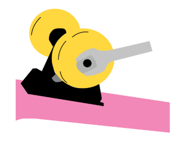
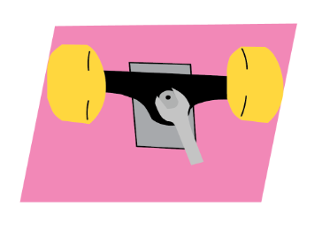
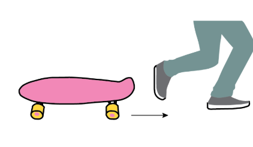
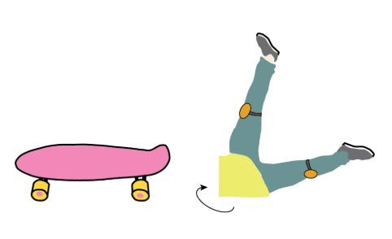
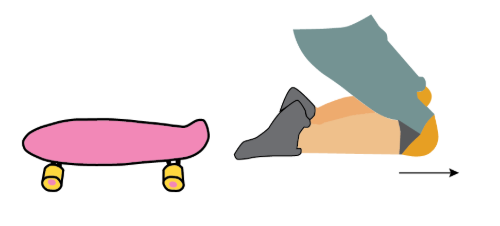

Safety check before riding it
Nuts and bolts should regularly be examined to ensure that they are not loose. It’s important to check
that the nuts that attach your wheels to the axle are securely fastened. These nuts should be tightened to
the point where they can no longer turn.

Adjust the trucks
Turn your board upside down, and adjust the nut in the middle of each truck counter clockwise with a half
of a quarter turn to tighten it. The tighter your kingpin bolt, the more security you will have when
skating.
Wear protective gear
Whether you’re a professional skater or a novice to the sport, protective gear is essential if you want to
skate safely. Wearing a helmet might not earn you cool points, but it will keep you safe and even protect
you from getting a concussion if you fall and land on your head. It’s best to protect all areas that are
exposed, including your head, knees, and wrists.

Run-out to avoid falls
Jump off your board by placing your back foot onto the ground in front of the skateboard, and
following with your front foot. Begin running in the direction that you were traveling in and only
stop the board once you have slowed down and regained control.

Roll after a fall
Rolling distributes the impact of a fall and prevents serious injury. Remember to shield your face with
your arms and aim to land on your back or shoulders.

Skate within your ability
If you are new to the sport, begin with mastering the basics. While skateboarding is about stepping
outside of your comfort zone, you should not try it until you are ready.